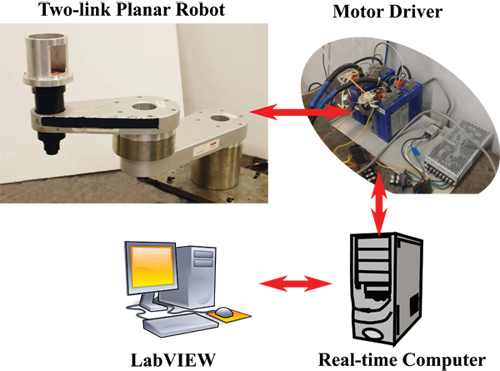
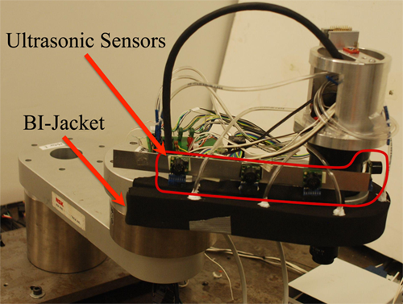
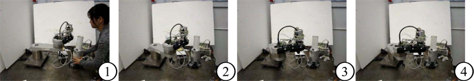

Safety for Human-Robot Collaboration
Introduction
With the growing need for humans and robots to share a workspace and/or task, the safety of human-robot collaboration/cooperation has been gaining increased research attention. To guarantee the safety of human workers, robot systems should be able to perceive the complex environment, react to any unexpected human workers on its planned trajectory, and continue on the task if possible. It involves on-line path planning and reactive control. Experiments on a two-link planar robot and simulations on an ITRI 7-DOF robot are conducted for validation. Furthermore, the algorithm may be applied with little change to the dynamic trajectory generation in robot-robot cooperation under a decentralized master-slave control structure.
Experimental Setup

Two-link planar robot setup
(servo motor, LabVIEW Real-Time, and FPGA modules)
BI-Jacket & Potential Field Based Methods
Motivation and Approach
In human-robot collaboration, the safety of the human worker has higher priority than achieving the task in
the robot system. Hence the robot safety system should be able to:
- Detect the human worker and the potential collisions via non-contact sensor.
- Avoid the potential collision and detour to the goal if possible.
- Provide the last shield of protection as the fail-safe mechanism if the detection algorithm fails.
Main Results
The ultrasonic sensors mounted on the robot are used to build the local map, in which the approximate positions of objects in the vicinity of the robot can be extracted. With the position information, the potential eld method is implemented to control the robot and achieve collision avoidance in real-time.

Two-link robot with the BI-Jacket and an array of ultrasonic sensors
The BI-Jacket, consisting of a so deformable substance and air pressure sensors, is mounted on the critical part of the link on the robot. The BI (Berkeley-ITRI)-Jacket not only provides a buff er between the human worker and the robot when a collision actually happens, but also detects the occurrence of the collision by monitoring the air pressure change inside the BI-Jacket.

Two-link robot to achieve obstacle (white tube) avoidance in motion pictures
Dynamic Trajectory Generation via Safety Index
Motivation and Approach
In order for the robot to react to the complex environment and unexpected objects properly, an eff ective quantitative measure about the safety in the vicinity of the robot is necessary. For this, the safety index is defi ned, which consists of distance safety index (DSI) and momentum safety index (MSI). DSI is self-explanatory, i.e., a shorter distance between the robot and an object indicating a higher DSI value. MSI, on the other hand, accounts for the linear momentum of every link on the robot towards an object in the workspace of the robot. The robot reacts to those objects, either a human worker or another robot, by generating a new trajectory on-line. The trajectory generation is based on solving an optimization problem which penalizes the safety index and the time to accomplish the original task.
Researchers
| Chi-Shen Tsai | Graduate Student | ||
| Recent graduates: | |||
| Shu-Wen Yu | Areva Solar |